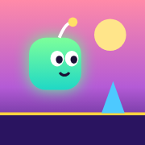
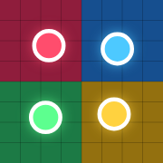

Aliyev O'yinlari
Brauzerda ishlaydigan rangli o'yinlar. Telefonda ham, kompyuterda ham o'ynash mumkin.

Neon Yuguruvchi
To'siqlardan sakrang, dronlar ostidan engashing va yulduzlarni yig'ing. Tezlik asta-sekin oshib boradi.
Yuguruvchi o'yin
Rang Jangi
To'rtta rangli shar maydonni bo'yash uchun kurashadi. G'olibni taxmin qiling yoki Shorts uchun yozib oling.
YouTube Shorts uchuniPhone'ga ilova kabi o'rnatish
- Shu sahifani yoki o'yinni Safari'da oching.
- Pastdagi Ulashish tugmasini bosing (yuqoriga strelkali kvadrat).
- "Bosh ekranga qo'shish" (Add to Home Screen) ni tanlang.
- O'yin belgisi bosh ekranda paydo bo'ladi va to'liq ekranda ochiladi.